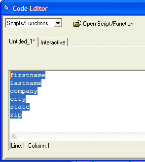
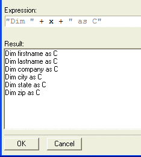
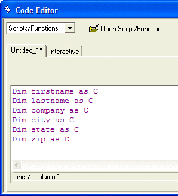

Transform Code Utility
The Code > Transform  command
is a very powerful script editing tool for advanced Xbasic programmers.
This utility has several built-in functions.
command
is a very powerful script editing tool for advanced Xbasic programmers.
This utility has several built-in functions.
Transform using an Xbasic expression
Remove blank lines
Sort (Ascending or Descending)
Invert (from the initial order)
Transform using an Xbasic Expression
Transform using an Xbasic Expression lets you use Xbasic to transform a block of code in the Code Editor. For example, assume that the Code Editor contains the following block of code:
|
Firstname |
You would like to transform the code into the following:
|
DIM Firstname as C |
To transform the code :
Select the text in the Code Editor.

Select the Transform Code command (from the toolbar, menu, or right-click menu). The Transform Code dialog appears.
Optionally, click the Remove Blank Lines or Sort radio buttons and click OK.
Optionally, enter a transformation expression in the Expression field. For example, enter: "DIM " + x + " as C", where " x " is the placeholder for the text on each line in the selection.

Click OK and the selected text is transformed.

Instead of entering your own Transformation expression, you can click the
 icon
next to the Expression text box, to get a list
of recently defined transformations, and also pre-defined transformations.
These include:
icon
next to the Expression text box, to get a list
of recently defined transformations, and also pre-defined transformations.
These include:upper case
lower case
proper case
first letter upper case
swap names
quote text
unquote text
trim leading and trailing spaces
trim leading spaces
trim trailing spaces
The first thing to do when composing an expression is to parse the "words" in the input data. There may be only one "word", but if there are more, use the WORD() function. For example, assume the input data is "word1 word2":
|
? word(data, 1," ") = "word1" ? word(data, 2," ") = "word2" |
Pre-Defined Transformations Dialog
After expressions are used, they are added to the list of expressions
that appear if you click the  icon to display the Pre-Defined Transformations dialog. When the dialog
appears:
icon to display the Pre-Defined Transformations dialog. When the dialog
appears:
Optionally, add a description to the transformation.
Click Save.
To remove a transformation, select it and click
 .
.